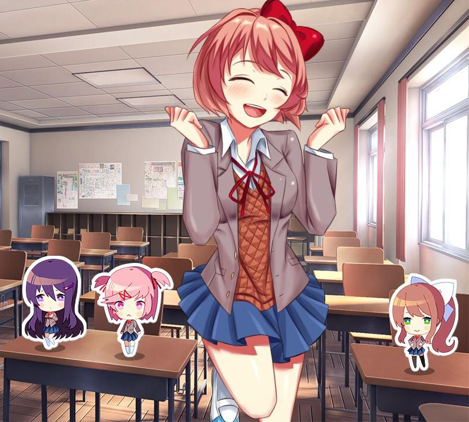

DDLC Salvation
E se as coisas pudessem ser diferentes? E se você pudesse salvá-la? Esta questão atormentou a mente da maioria das pessoas depois de terminar o primeiro ato de DDLC. A salvação continua respondendo a essa pergunta. Depois de evitar por pouco uma tragédia, os membros do clube sofrem um acidente. Monika é forçada a ficar no hospital e Sayori tem que assumir o manto de presidente do clube em sua ausência. No entanto, conforme você se aproxima das outras garotas, Monika tem que perceber uma verdade sombria. Até onde você está disposto a ir para salvá-las? Você tem o que é preciso para ser a salvação dela?
⬇ Download